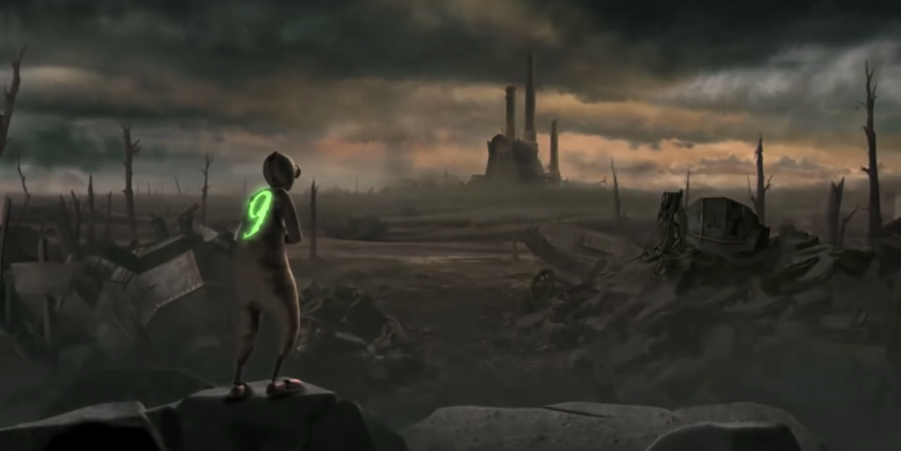

9

Rating | PG-13
Runtime | 1h 19m
Release Date | 09.09.2009
Writers | Shane Acker, Pamela Pettler
Director | Shane Acker

Plot | When 9 first comes to life, he finds himself in a post-apocalyptic world. All humans are gone, and it is only by chance that he discovers a small community of others like him taking refuge from fearsome machines that roam the earth intent on their extinction. Despite being the neophyte of the group, 9 convinces the others that hiding will do them no good.